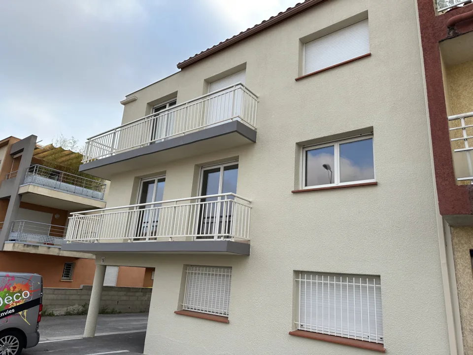

Peinture intérieure
Murs et plafonds avec rendu net, propre et durable.
- Préparation complète
- Application soignée
- Finition régulière
Un interlocuteur unique, des explications claires et un travail soigné. Préparation rigoureuse, application précise, finitions maîtrisées.
« Artisan très professionnel et sérieux. Travail impeccable, finitions soignées et chantier laissé parfaitement propre. »Lire les autres avis clientsVérifier sur Google





En tant qu'artisan peintre en bâtiment à Saint-Cyprien, nous vous proposons une offre simple, lisible et orientée résultat. Chaque solution est adaptée à votre support pour une tenue durable.
Murs et plafonds avec rendu net, propre et durable.
Façades et extérieurs protégés, avec tenue durable dans le temps.
Effets matière soignés pour un rendu esthétique et homogène.
Pose précise pour un sol propre, net et durable.
Nous réalisons aussi les enduits de préparation et de finition (dont les enduits projetés mécaniquement), les bandes et joints de plaques de plâtre, la rénovation de façades, la rénovation après dégât des eaux ainsi que la pose de sols souples et de revêtements LVT. Pour en savoir plus : peintre à Saint-Cyprien, peintre à Perpignan et ravalement de façade à Saint-Cyprien.
Chantiers réels réalisés par Style & Déco : surfaces propres, lignes nettes, finitions contrôlées.
 Le grand séjour : murs grège, plafonds blanc mat.
Le grand séjour : murs grège, plafonds blanc mat.
Finition nette et durable sur 300 m² habitables, après une préparation complète des supports.
Une maison contemporaine aux grands volumes, livrée en plaques de plâtre brutes. Ratissage mécanisé de tous les murs et plafonds, protection des ouvrages neufs des autres artisans, peinture à l'airless, puis finitions décoratives.
Autres chantiers récents
Les mauvaises expériences avec un artisan, nos clients nous les racontent. Voici comment on les évite.
Nous sommes assurés en responsabilité civile professionnelle et en décennale, pour les activités déclarées à nos contrats. Notre attestation d'assurance est remise sur demande, avec votre devis.
« Envoi du devis, très détaillé ce qui est super, assurances jointes ce qui est extrêmement rare. »
Ce que vous verrez chez vous, du premier jour à la livraison. Photos de nos chantiers à Perpignan.
Sols, menuiseries et prises sont bâchés et masqués avant le premier coup de ponceuse. Vous circulez chez vous sans risque.
Étape 2Rebouchage, ratissage, joints, ponçage. C'est l'étape invisible qui fait la tenue et la régularité de la peinture.
 Étape 3
Étape 3Impression, puis couches régulières et lignes nettes. La finition se choisit selon la pièce et sa lumière.
Étape 4Nettoyage complet, tour du chantier avec vous, retouches si nécessaire.
Une sélection d'avis publiés sur notre fiche Google.
« Suite recherche j’ai voulu essayer car avis au top. Envoi du devis, très détaillé ce qui est super, assurances jointes ce qui est extrêmement rare. Travaux : Ponctuel, très professionnel, excellente protection du chantier, s’applique à ce que tout soit parfait, fin de chantier nickel avec nettoyage complet. Résultats exceptionnels, on voit que cet artisan est un vrai pro avec un travail soigné et de qualité. Rangé dans la catégorie des super artisans avec un haut niveau de compétences dans son domaine. Merci à lui. »
« Artisan très professionnel et sérieux. Travail impeccable, finitions soignées et chantier laissé parfaitement propre. De très bons conseils et un vrai souci du détail. Je recommande vivement ! »
« Après l’achat de mon appartement à Saint-Estève, j’ai confié la rénovation complète en peinture à Style et déco , et le résultat est impeccable. Travail soigné, finitions parfaites, respect des délais et chantier propre du début à la fin. L’entreprise a totalement transformé mon appartement. Je recommande Style et déco pour tous travaux de peinture intérieure et rénovation d’appartement à Saint-Estève et aux alentours de Perpignan. Professionnalisme et excellent rapport qualité/prix »
« J’ai fait appel à Nicolas pour des travaux de rafraîchissement (joints, peinture et parquet) et je suis très satisfaite du résultat. Son travail est minutieux, très soigné et réalisé avec beaucoup de sérieux. La qualité est irréprochable et tout est laissé propre. En plus d’être très professionnel, il est respectueux et agréable. Je le recommande vivement. »
« Travail de qualité et attitude de professionnel, tout en sachant établir une relation de confiance avec ses clients et en cherchant à les satisfaire. »
« Déjà 2 fois que je fais appel aux talents de M. Pluchart et toujours aussi content du résultat. Travail de très haute qualité et de très bons conseils. »
Vous avez fait appel à nous ?
Votre avis aide d'autres particuliers de la région à choisir leur artisan. Il ne prend qu'une minute.
Indiquez-nous où se trouve le chantier, la surface approximative et le rendu souhaité. Nous vous répondons sous 24 h avec les prochaines étapes.
Demande de rappel
Laissez votre nom et votre numéro : nous vous rappelons sous 30 min.
Les questions qui reviennent le plus — pour lever les doutes avant de vous décider.
Une autre question ? Appelez-nous.
Réponse sous 24 h. Pour un devis précis, on confirme surfaces, état du support et finition attendue.
Protection systématique (bâchage/masquage), circulation organisée, nettoyage en fin de journée et fin de chantier.
Oui, selon votre zone et le planning. L'objectif reste le même : finition nette et délai respecté.
Ça dépend des pièces et de la lumière. Mat pour masquer les défauts, velours pour l'équilibre, satiné pour zones sollicitées.
Oui. On peut planifier en horaires adaptés et proposer des solutions durables à entretien facile.
Démarrage généralement sous 1 à 3 semaines après validation du devis, selon notre planning. Nous le précisons dès le premier échange.
Le tarif dépend surtout de la surface, de l'état des supports, du niveau de préparation et de la finition choisie. Le devis détaille les postes pour rester lisible.
Oui, si nécessaire pour valider précisément les supports, les contraintes et le rendu attendu, afin d'établir une estimation fiable.
En cas d'ajustement, une reprise est organisée rapidement pour livrer un résultat conforme aux attentes validées ensemble.
Un projet ? Un appel suffit.
Pour savoir ce qui est possible, dans quel délai et à quel prix.
Intervention à Saint-Cyprien, Perpignan et communes voisines. Déplacement rapide selon votre secteur.